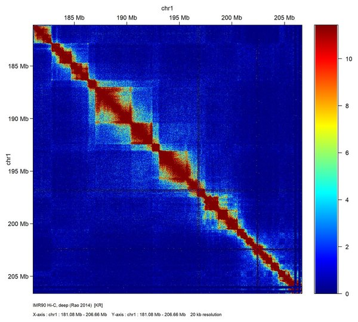
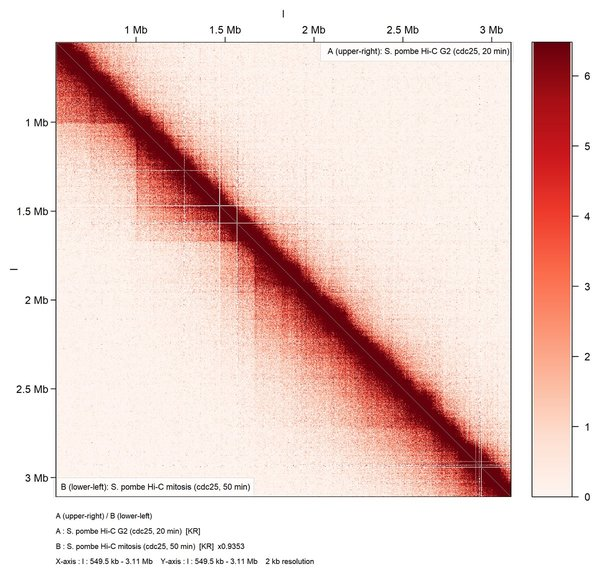
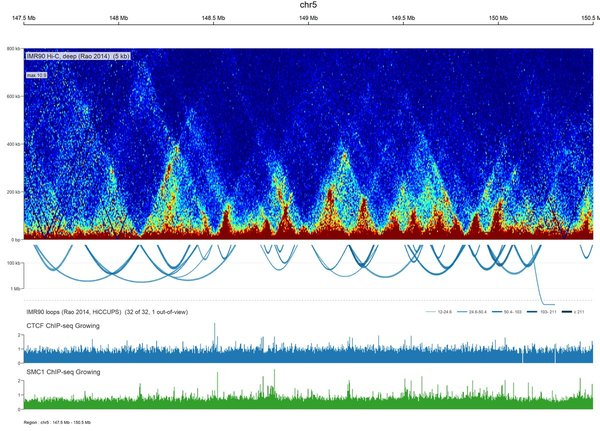
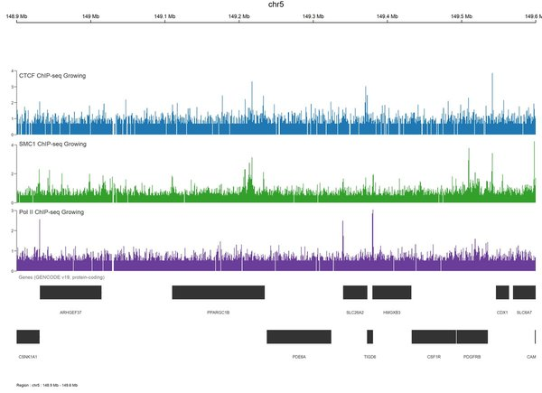
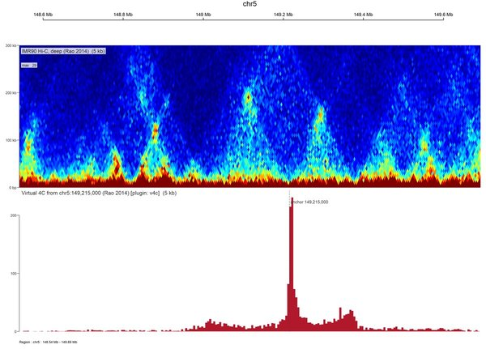
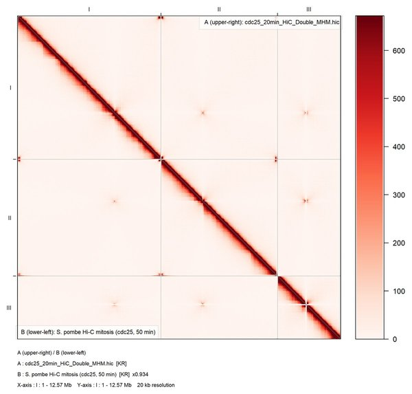
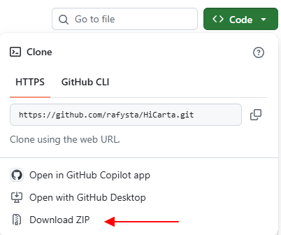

HiCarta¶
Explore Hi-C maps as easily as online maps.
HiCarta is a free desktop application for interactive visualization of Hi-C data. Pan and zoom with simple drag and scroll gestures, from a whole-genome view down to individual genes. View loops, ChIP-seq signals, and other genomic tracks alongside Hi-C maps, compare maps across experimental conditions, create custom tracks in R, and export editable figures for publication.
HiCarta runs on your own computer without requiring a separate server. Once R is installed, you can launch HiCarta with a double-click. The name "Carta" alludes to maps and charts.
Watch the 4-minute demo above or the 1-minute overview.
Examples¶
 Hi-C map |
 Two conditions in a split view (upper right and lower left) |
 Rotated map + loops + ChIP-seq |
 ChIP-seq tracks + genes |
 Custom track written in R |
 Multiple chromosomes in a single view |
All the figures above were exported from HiCarta as PDFs. Learn more in What HiCarta can do.
Find what you need¶
- First 5 minutes — use public data to open a map, add tracks, and export a figure
- Installation — install and start HiCarta on Windows or macOS
- Compare two conditions — three comparison modes: split, curtain, and difference
- Make a publication figure — export a PDF from the print preview and finish it in Illustrator or similar tools
- Use your own data — create an Excel data catalog
- Share unpublished data — use Amazon S3 access controls
- Create your own track — extend HiCarta with R plugins
- Comparison with other tools — how HiCarta differs from Juicebox, HiGlass, JBrowse 2 and others
Work with your existing data files¶

Open .hic files and track data from your own computer, a web server, Dropbox shared links or Amazon S3 (public or private). HiCarta retrieves only the required portions of remote .hic and bigWig files by default, so you do not need to download entire files in advance. How HiCarta works explains how this works.
Quick start¶
- Install R (4.1 or later) from https://cran.r-project.org.
-
On GitHub, download the code using Code → Download ZIP and unzip it.

-
Start HiCarta.
- Windows — double-click
run_windows.bat. - macOS — double-click
run_mac.command(if it is blocked, right-click → Open).
On the first launch, the required R packages are installed automatically, which can take a few minutes. 4. HiCarta appears in your web browser. Next, open the demo data in First 5 minutes.
- Windows — double-click
See Installation and Setup details & troubleshooting for details.
Developer: Hideki Tanizawa (rafysta@gmail.com), Institute for Genetic Medicine, Hokkaido University Source: github.com/rafysta/HiCarta · MIT License Please submit questions, bug reports, and feature requests through GitHub Issues.